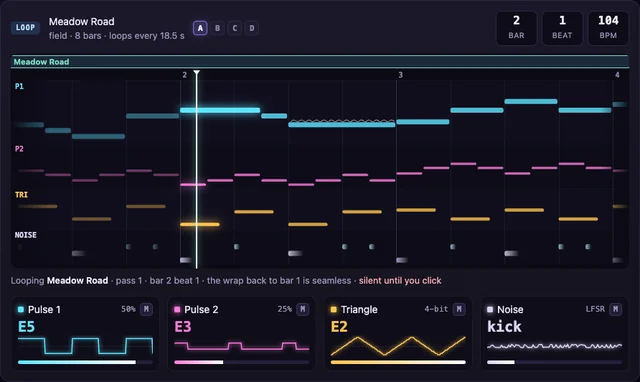
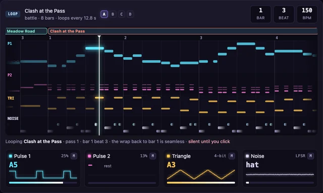
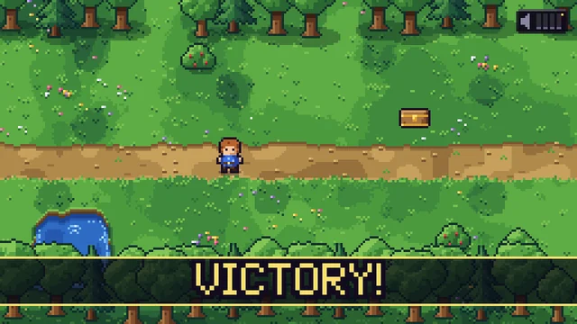
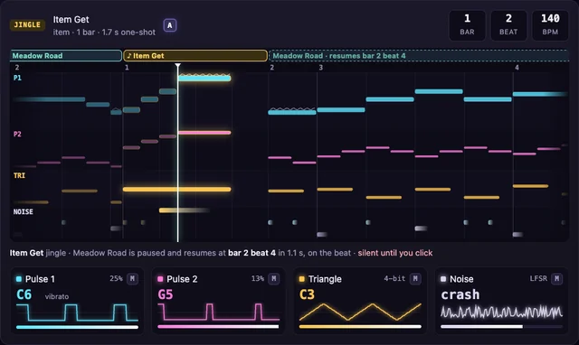

Chip music
Chip-tune music synthesized live: four-channel loops that switch on the beat, plus jingles. An add-on for any game.
What it does
A four-channel chip band synthesized in Web Audio from pattern data: two pulse leads with duty cycle, a stepped triangle bass and a noise drum kit, with arpeggio, vibrato and slide effects.
Made forturn-based RPG (title, field, battle, victory fanfare)top-down adventure and action RPGplatformer and metroidvaniatactics / strategy RPGarcade and shoot-em-upany game with a title screen and a results screen
Moments
Four moments from the demo

Play from here
Play from here
Play from here
Play from hereTake it home
Hand it to your agent
- Copy the prompt. It is written for a game your agent has never seen.
- Give it the module (
chip-music.js) and its README. - Play your game. The prompt ends with checks your agent can run.
# Add Chip music to my game Add the game element below to MY existing game, which you have not seen. It is a finished module file given with this prompt: - `chip-music.js` (one global, `GameDNA_ChipMusic`), API reference `chip-music.README.md` README example names are placeholders. ## Shared premises 1. **Include each module file verbatim; never edit it.** Load it with its own `<script src>` before the game's script, or paste it unchanged into its own `<script>` tag. If a module seems to need a change, adapt my game around it and tell me. 2. **Resolution:** keep my game's native resolution and integer scaling as they are. Call module draw functions on my 2D context inside the same transform as my sprites (one module pixel = one game pixel), and keep my game's own image-smoothing setting (off for pixel art, on for smooth or HD games; never switch it). 3. **Time:** drive every module from one fixed 60 Hz step (1000 / 60 ms). If my loop uses variable delta time, accumulate it and run whole steps (at most 250 ms per frame). 4. **Coordinates:** native screen pixels (world minus camera) unless a section says tiles. 5. **Art and names:** anything new you draw or name is original (no real game, character, place or brand names); English UI text; do not restyle my game. 6. **Hook, don't replace:** add calls or change bodies; never delete or rename a function.Open the whole prompt
Works well with
Combine it
Also pairs well with
Draining HP barHP bars that drop at once, then drain a pale loss segment so every hit reads.
Toasts & unlock pop-upsItem, quest and achievement pop-ups that stack and merge without pausing.
Stamina & outpost restSquads tire as they march and fight, and rest at camps you hold.
Combat forecast windowSee damage, hit chance and counters before you commit.
Motion-input special movesSpecial moves from quarter circles, charges and full circles, with an input display.
Conditional tactic rulesUnits that act by your rules, and say which rule fired.